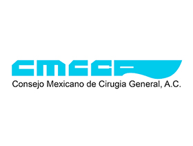
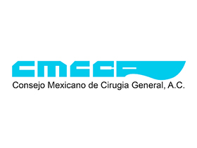

Bariatric Team
Dr. Arturo Valdés
With extensive advanced experience in the management of the airway of patients with obesity. Graduated in the specialty of anesthesiology from the fernando quiroz gutiérrez hospital issste-UNAM méxico d.f. Certificate and recertified by the mexican council of anesthesiology staff physician at hospital christus muguerza saltillo and medical anesthesiologist. Coordinator of the anesthesiology service member and founder of the college of medical anesthesiologists of the state of coahuila, teaching coordinator and president in period 2001-2003. It is certified by the mexican council of general surgery " The doctor has studies at the excellence center for the study and treatment of obesity in valladolid, spain, by professor dr. Miguel ángel carbajo caballero.
Also in "surgical and multidisciplinary management of obesity" by the national autonomous university of mexico.
He has a diploma in bariatric nutrition, endorsed by the international federation for the surgery of obesity and metabolic diseases.
He is the director and founder of bariatric solution, bariatric center of the christus muguerza saltillo hospital.
He has been a pioneer in mexico of the bagua technique (surgery for obesity and diabetes), and was recently invited to participate as an expert in the first bagua world consensus.
It is proudly a member of:


 



Dra. Ivon Ruiz Burciaga
Internal medicine and intensive therapy
With extensive advanced experience in the management of the airway of patients with obesity. Graduated in the specialty of anesthesiology from the fernando quiroz gutiérrez hospital issste-UNAM méxico d.f. Certificate and recertified by the mexican council of anesthesiology staff physician at hospital christus muguerza saltillo and medical anesthesiologist. Coordinator of the anesthesiology service member and founder of the college of medical anesthesiologists of the state of coahuila, teaching coordinator and president in period 2001-2003. It is certified by the mexican council of general surgery "
- Graduated as surgeon of the juarez university of the state of durango
- Specialty in internal medicine by the autonomous university of nuevo leon.
- Subspecialty in sick medicine in a critical state by the technological institute and higher education of monterrey.
- Certified by the mexican board of internal medicine and the mexican council of critical medicine a.c.
- Member of the medical corps of the christus muguerza saltillo hospital.
Certified by the Mexican Board of Internal Medicine and the Mexican Council of Critical Medicine A.C. Member of the Medical Corps of the Christus Muguerza Saltillo Hospita

Dr. Rodrigo Gutiérrez Udave
Gastroenterologist
- Subspecialty in gastroenterology by the university hospital uanl high
- Specialty in advanced digestive endoscopy at the university hospital uanl
- Certified by the mexican board of internal medicine
- Certified by the mexican council of gastroenterology
- Certified by the mexican council of digestive endoscopy
- Certificate for the intragastric balloon implantation.

Dr. Gabriel Cruz Zorrilla
Medical surgeon graduated from the university of monterrey, graduated with honors and cum laude price, undergraduate internship in the general hospital of zone # 33 of the ims, graduate of otolaryngology and head and neck surgery, endorsed by the unam, in the national institute of rehabilitation (inr). Training stay in the department of otorhinolaryngology, at the university hospital of navarra, pamplona, SPAIN, with a postgraduate degree in sleep medicine at the same university. First place in the certification exam of the mexican council of otolaryngology and head and neck surgery. High specialty in sleeping respiratory disorders, endorsed by the unam, carried out in the sleep clinic of the national institute of respiratory diseases (iner).
- Mexican society of otolaryngology and head and neck surgery.
- Mexican federation of otolaryngology and head and neck surgery.
- Mexican academy of sleep medicine.
- College of otorhinolaryngology of coahuila.
- American academy of otolaryngology and head and neck surgery.
Belongs to the mexican college of surgery for obesity and metabolic diseases a, c.

Lic. Sofía Carolina Oranday Gallegos
Nutritionist
- Graduated from the autonomous university of nuevo leon
- Nutritional advisor in heart disease, hypertension, metabolic syndrome, diabetes, pregnancy and lactation
- Diploma in nutrition specialized in obesity surgery, endorsed by the mexican college of surgery of obesity in mexico.

Lic. Melissa Sánchez Álvarez
Bariatric psychologist and family therapist
- Graduated from the University of the Valley of Mexico Master's Degree in Systemic Family Therapy from the Autonomous University of the Northeast
- Diploma in Bariatric Psychology from the Research and Education Institute of Health Sciences,
- Endorsed by the International Federation for the Surgery of Obesity in Metabolic Disorders (IFSO)
- Diploma in Evaluation with Clinical Diagnostic Tests of the Autonomous University of Nuevo León
- Belongs to the Mexican College of Surgery for Obesity and Metabolic Diseases A, C.

Dr. Enrique de los Santos Valdés
General Surgery and Advanced and Midwifery Laparoscopy by the University of Monterrey
Professional Certificate: 4760223
Specialty Certificate: 8566400 8566400
It has different national courses abroad, among which are:
- “Advanced Laparoscopic Surgery Proctorship” Septiembre 2010. Texas Endosurgery Institute. San Antonio, TX.
- “Advanced Laparoscopic Surgery Proctorship” Octubre 2011. Texas Endosurgery Institute. San Antonio, TX.
- “Laparoscopic General Surgery Intensive Course” Septiembre 2013. European Institute of Telesurgery, Université de Strasbourg. Estrasburgo,FRA.
It is certified by the Mexican Council of General Surgery

Dr. José Alberto Martínez
Specialist in anesthesiology by the hospital of high specialty # 25 imss in monterrey n.l certificate and recertified by the mexican council of anesthesiology.
Professional certificate: 1082286
Specialty certificate: 3356678
With Extensive Advanced Experience In The Management Of The Airway Of Patients With Obesity.
- With extensive advanced experience in the management of the airway of patients with obesity.
- Graduated in the specialty of Anesthesiology from the Fernando Quiroz Gutiérrez Hospital ISSSTE-
- UNAM México D.F. Certificate and Recertified by the Mexican Council of Anesthesiology Staff
- Physician at Hospital Christus Muguerza Saltillo and Medical anesthesiologist. Coordinator of the Anesthesiology service Member and Founder of the College of Medical Anesthesiologists of the State of Coahuila
- Teaching Coordinator and President in period 2001-2003
It is certified by the Mexican Council of General Surgery

Enf. Aimee Suárez Espinoza
Bariatric Surgical Nurse, with more than 15 years of experience in advanced medical surgical procedures, as well as nursing care in preoperative, transoperative and postoperative.
- Graduated from the Institute of Nursing Josefa Medina De Valle Arizpe. (CRUZ ROJA Mexicana), Saltillo Coahuila.
- Diploma in Bariatric Nursing. Endorsed by the International Federation For The Surgery Obesity and Metabolic Disorders (IFSO).
- Hospital Rubén Leñero México D.F
- Institute of Research and Education of Health Sciences.
- Virtual Teaching of Health Envirsa México D.F
- Graduated from the School of Nursing of Monterrey (UDEM).
- Specialty of Surgical Nurse.

Dra. Erendira León
Professional certificate: 6067301
Dra. Erendira León Preparator Physics - Bariatric Physical Therapy - Personal Trainer. With 13 years of experience, he has carried out various studies and presentations such as:
- 3rd Symposium on Pediatric Nutrition "Changing your future". Workshop: Physical Activity in Childhood. Autonomous University of the Northeast. Saltillo Coahuila. November 21, 2015
- 2nd Symposium on Nutrition and Sports. Presentation: Training methods, myths and realities. Workshop on Anthropometry and Physical Activation in Specific Populations. Autonomous University of the Northeast. Saltillo Coahuila. November 28 and 29, 2014
- Tenth Physical Education Congress. Workshop Course "Nutrition and Training Methods for Teachers". Saltillo Coahuila. March 2012
- SEP.- Tour of the State of Coahuila. State training for Teachers in charge of the School Centers of Counseling and Prevention Against Obesity. November 2011.
- Conference of Professionalization of Educational Figures of Physical Education "Rediscovering Physical Education as fundamental resources for learning" Lecture of "Planning of sports training in Physical Education". August 2011. Saltillo, Coahuila.
- First Symposium of Sports Medicine "Tlatoani Cayetano Garza Garza". School of Sports Organization, U.A.N.L. Exhibition of the topic "Cases to call the paramedics". November 14, 2005.
- XXIII National Congress of Biomedical Research. Faculty of Medicine, U.A.N.L. "Maximum Lacticidemia Competitions of 100m, 200m and 400m Long Course. Contrast Study ". October 27 to 29, 2005
- XXIII National Congress of Biomedical Research. Faculty of Medicine, U.A.N.L. "Comparative Study of Glicemia and Body Weight in Exercise Program and Diabetes Mellitas". October 27 to 29, 2005.
She is an active member of the Mexican College of Surgery for Obesity and Metabolic Diseases and of the Organization Exercise is Medicine Mexico.

Dr. Enrique Silva Flores
Specialist in Anesthesiology

Dr. Cristian González
Internist